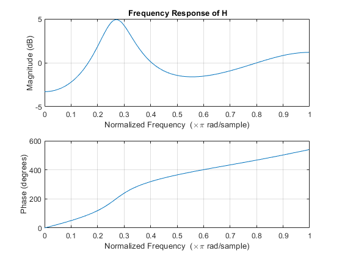

Digital Signal Processing MATLAB HW - q4
Professor: Dr. Sheikhzadeh Author: [SeyedAli] - [SeyedHosseini] E-mail: [alisnake@aut.ac.ir] %which I`m about to change ASAP University: Amirkabir University of Technology
Contents
Clear recent data
clear; close all; clc;
defining variables for part A
c = -2*sqrt(2) ; a = [1 c 4]; %denominator b = [4 c 1]; %numerator
Plot the frequency response of the system :
figure(1) freqz(b , [1 a] ) %using freqz command title(" Frequency Response of H");
Part B : Plot the poles and zeros of H(z)
[b,a] = eqtflength(b,a); [z,p,k] = tf2zp(b,a); figure(2) zplane(z,p) grid title("zeros and poles of H(z)"); display("Because system is stable , ROC must include |z| = 1 so ROC is |z| <1.99 ")
"Because system is stable , ROC must include |z| = 1 so ROC is |z| <1.99 "
part C : finding h(n) and s(n)
[r,p,k1] = residue(b,a) ; % now We have numerators and denominators and poles r = r'; p = p'; % we make them row matrix n1 = -30 : 1 : -1 ; h = r(1).*((p(1)).^-n1) + r(2).*((p(2)).^-n1); %% we define h[n] using pfe and residue command u = stepseq(0,-5,24); %u(n) s = conv(h,u); %% s(n) or step response is impulse response h[n] conv u[n]
plotting responses
figure(3) subplot(211) stem(n1,h,'r*') grid on title("Impulse response in time domain") xlabel("time") ylabel("amp") axis([-40 10 -35 35]) n2 = -29 : 1 : 29; subplot(212) stem(n2,s,'g') grid on title("Step response in time domain") xlabel("time") ylabel("amp") axis([-10 40 -35 35])
Function Step Sequence
function [x,n] = stepseq(n0,n1,n2) % Generates x(n) = u(n-n0); n1 <= n <= n2 % ------------------------------------------ % [x,n] = stepseq(n0,n1,n2) % n = [n1:n2]; x = [(n-n0) >= 0]; end